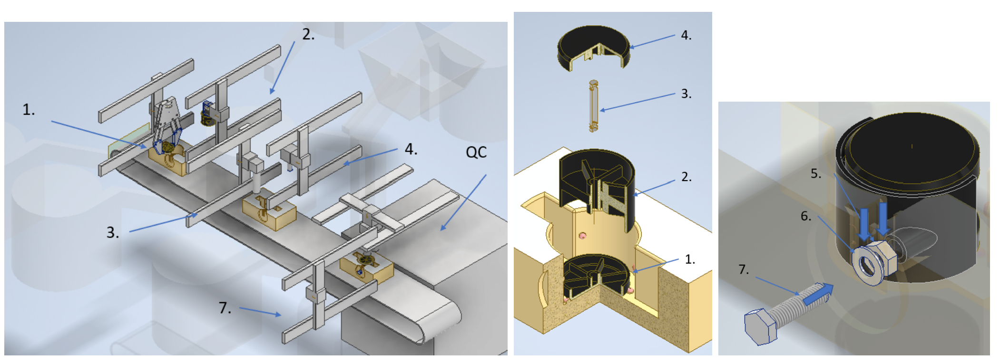
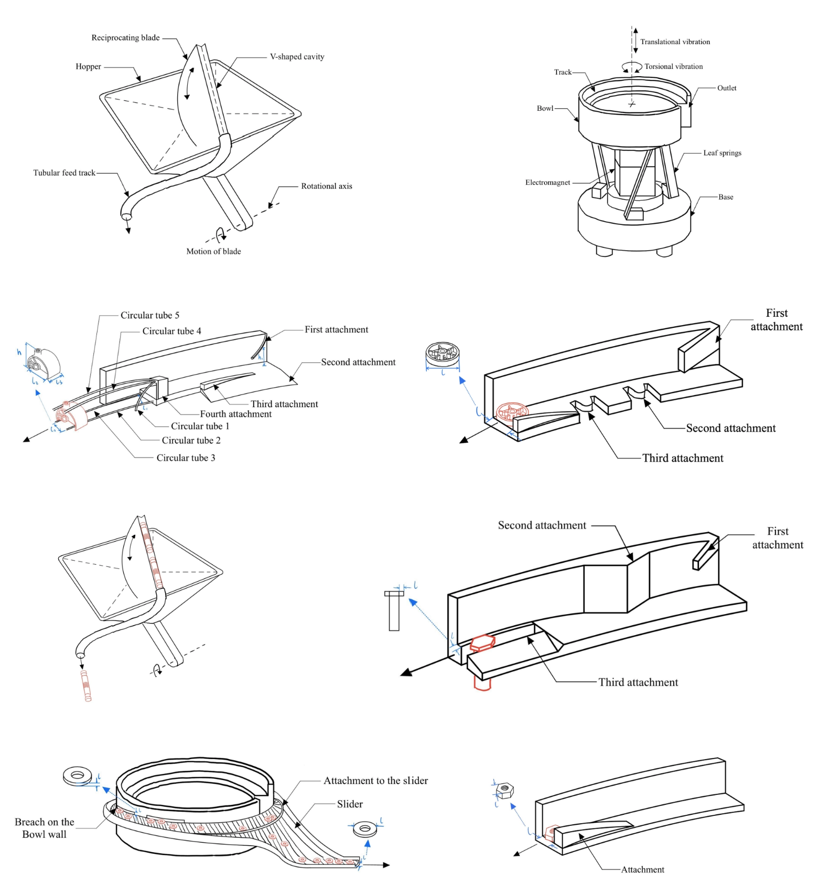
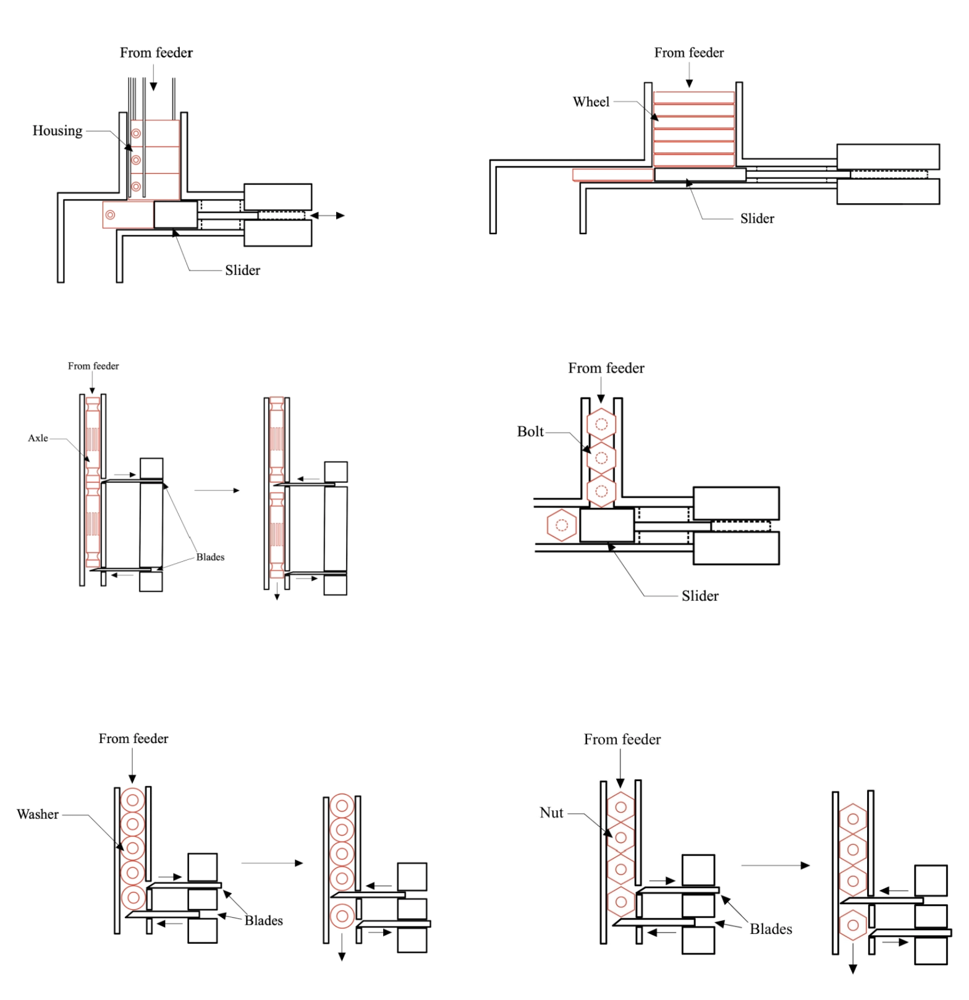
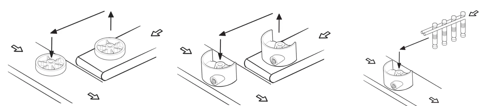

Chair Caster Assembly System Design

Overview
Designed a complete automated assembly line to manufacture chair caster wheels, the small wheeled parts found under office chairs, from raw components to a finished, tested product. Worked through the full manufacturing pipeline: sorting parts, feeding them into the line, assembling them, testing quality, and packaging the result, then costed out the whole system.
What I did
- Designed part-feeding systems that automatically sort and orient loose parts (wheels, axles, housings, bolts) as they come off a supply line, using vibration and gravity-based feeders.
- Engineered custom grippers for each part type, including an inflatable gripper for delicate parts and vacuum grippers for delivery and testing.
- Planned the robotic assembly sequence, deciding which movements and mechanisms each step of assembly required.
- Built in an automatic quality-check step that tests each finished caster before it's packaged.
- Proposed a redesign of the caster itself to simplify assembly, cutting three fasteners down to one part and making two components share the same gripper.
- Produced a full cost estimate for the system, coming in at about $37,200.
Design

Part feeders: a reciprocating-blade hopper feeder and a vibratory bowl feeder, with track attachments that orient each part type.

Escapement mechanisms that release parts from each feeder one at a time, using sliders and blades.

Assembly sequence: placing the wheel, fitting the housing over it, and inserting the axle.
Tools
Design sketching, SolidWorks, manufacturing systems design, process/cost analysis